The diet that worked at 28 stops working at 45. I help women over 30 find the hormone pattern behind their plateau, and fix it with food, training and sleep.
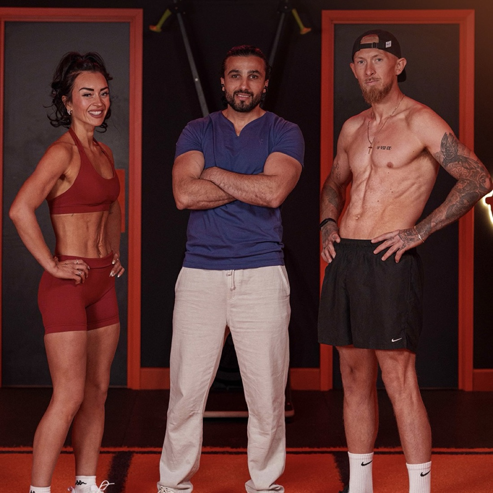
Most women I meet aren’t lazy. They’re doing too much of the wrong thing. Here’s what I tell every one of them.
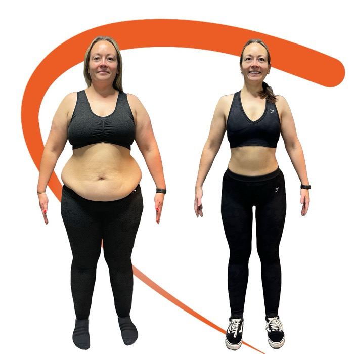
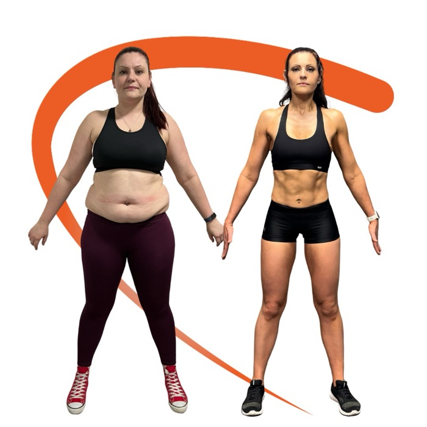
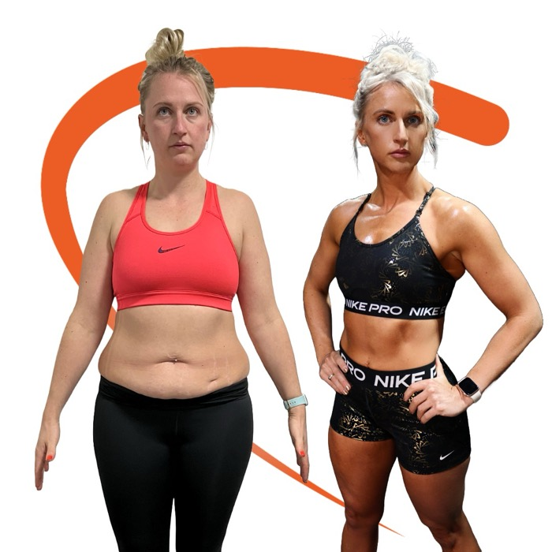
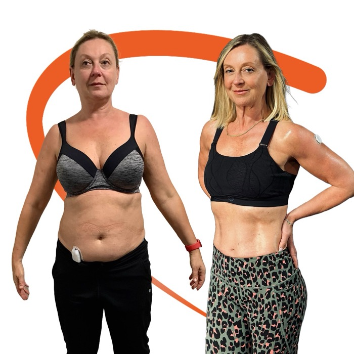
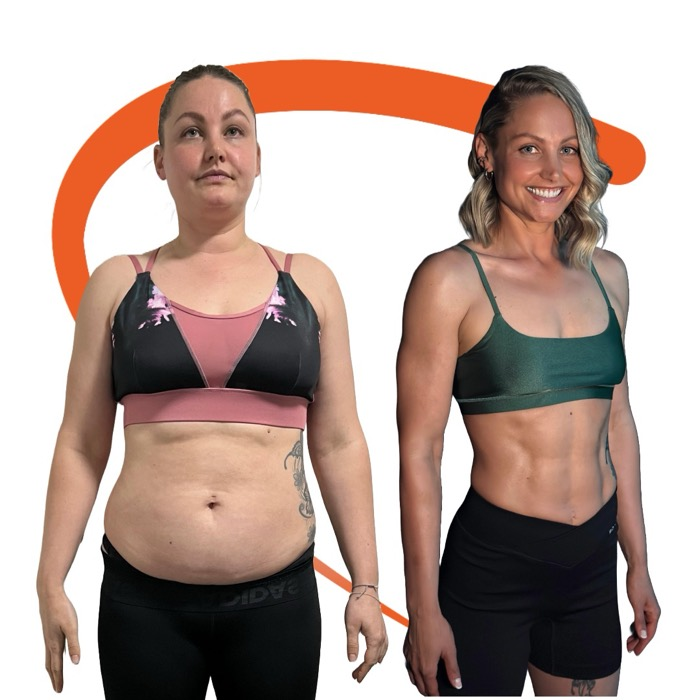
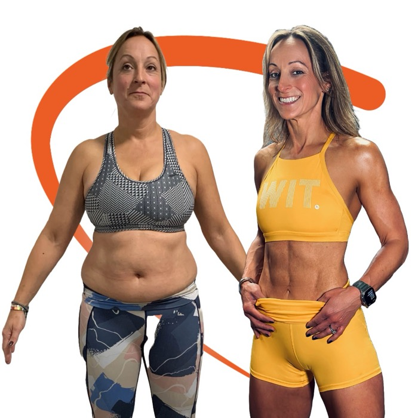
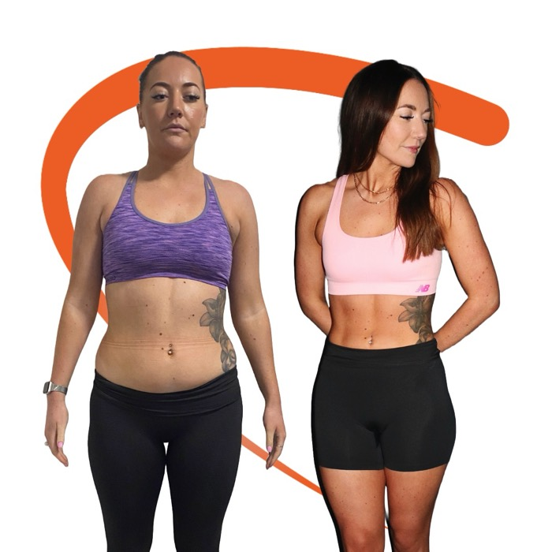
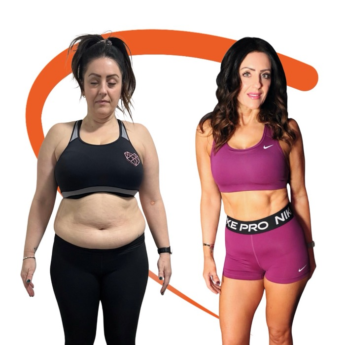
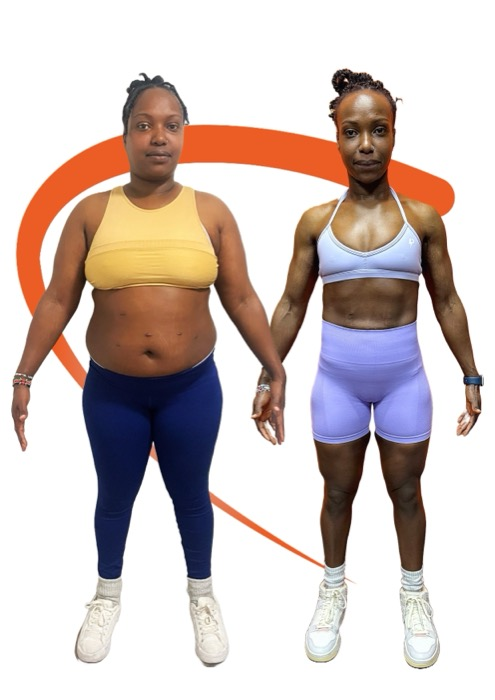
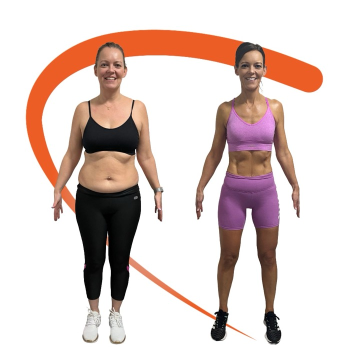
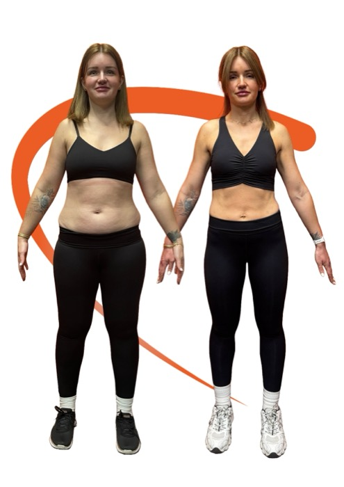
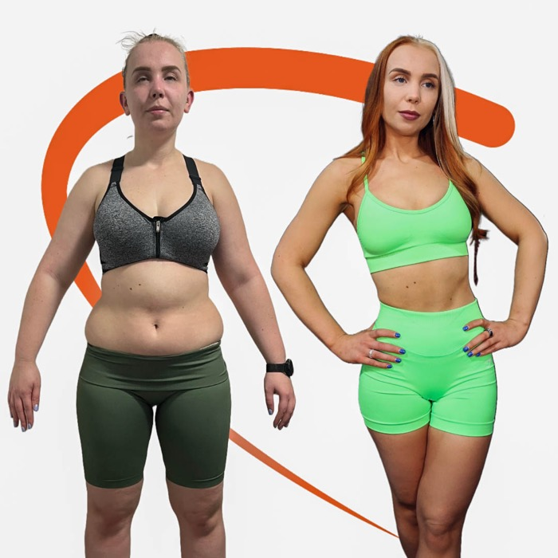
“I’m 7 weeks into my ReShape journey. Not only am I 1 stone lighter, I feel alive again.”
Sara B. · Google review“Fantastic supportive coaches, great nutritional plan with variety. I’m feeling stronger and healthier.”
Kimberley F. · Google review“Feeling stronger, more energised and more alive than I have in a long time.”
Cassie J. · Google reviewIndividual results vary.
When one team struggles, the others feel it. The assessment maps your symptoms to the team that may be holding you back.
Insulin, glucagon
Leptin, adiponectin, SHBG
Cortisol, adrenaline
Growth hormone, testosterone
Thyroid
Ghrelin, GLP-1
Estrogen, progesterone, aldosterone
It maps symptom patterns. It shows where to look.
14 questions about your cycle, sleep, stress, hunger and history.
See which pattern your answers point to, and why what you’ve tried may not have worked.
Download the ReShape Method app. A coach from my team gets in touch to talk it through. No pressure to join.
I run ReShape Method in Ipswich and Colchester with my team of coaches and nutritionists. More than 1,200 people have changed their bodies with us, and 92% finish the programme.
On stage, in the studio and in the app, I teach the same thing: find your pattern, stop what makes it worse, and give your body a reason to change.
A screening tool, not a blood test. It maps symptom patterns commonly seen with specific hormones.